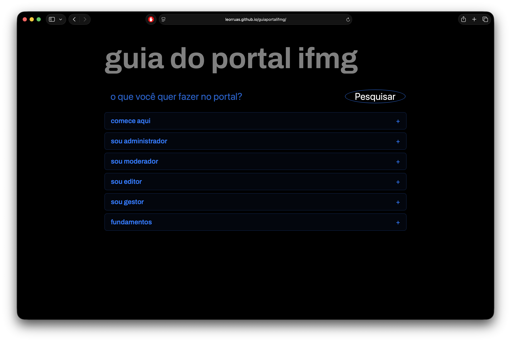
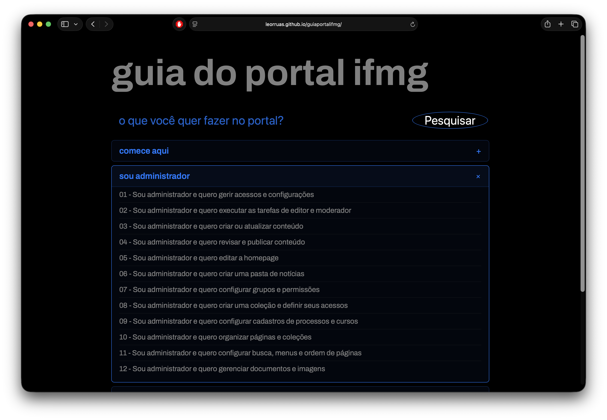

01 / Source

One page exposed three competing navigation models.
Institution first
Government and institutional layers competed for attention before a public task could begin.
Services mixed with systems
Admissions, staff systems, ombudsman services, press, and budget appeared at the same level.
Content as a fallback
Chronological news carried time-sensitive actions that needed permanent service routes.

The homepage makes the hybrid architecture visible.
Global journeys
Admissions, courses, campuses, and institutional reference have a clear, shared entry point.
Need-based access
Students, staff, communities, and transparency become recognisable routes without isolating the system into silos.
Service depth
The open student menu surfaces actionable services such as support, libraries, and help requests.

The information model starts with what a student needs to do.
Task, not tool
“Academic systems and tools” groups SUAP, Moodle, email, library access, and Wi-Fi around a meaningful need.
Service explanation
Each card explains what the service is for before asking a person to learn an acronym or system name.
Scalable pattern
The same task-based model can serve students, staff, communities, and prospective students.



Role-based entry
Editors, moderators, administrators and managers start with their responsibility—not a CMS feature.
Task classification
Work is organized by intent, content type and workflow, making complex operations easier to find.
Practical procedures
Each page explains purpose, prerequisites, steps, expected result, limits and handoff.

A shared architecture needs local proof before institution-wide scale.
Current stage
The Ouro Branco campus implementation adapts the shared model to a real local context; usability testing is now in progress.
What testing informs
Can people find academic-life tasks and understand labels? The findings tell us which patterns to retain, adapt locally, or clarify before the next rollout.
Change management
Sessions create shared ownership: campus leaders and service teams see real user evidence, interpret local realities, and become informed advocates for change.
No impact claim yet · evidence collection in progress